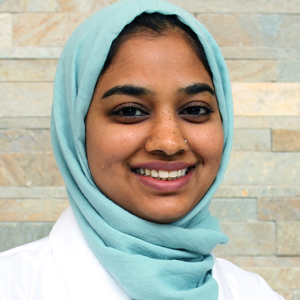
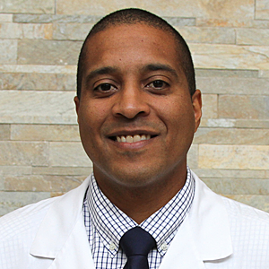
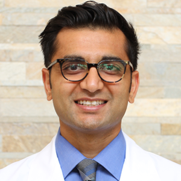
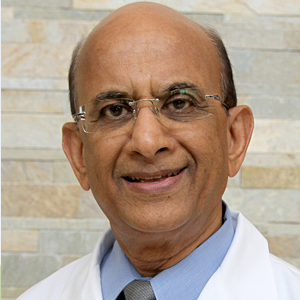
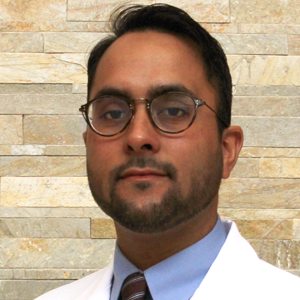
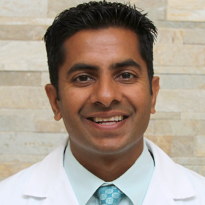
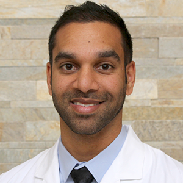

Dr. Humera Baig
Diagnostic Radiology

Dr. Andre L. Edwards
Diagnostic Radiology

Dr. Darius Keblinskas
Diagnostic Radiology

Dr. Hiren Patel
Diagnostic Radiology
Dr. Nisha Patel
Diagnostic Radiology

Dr. Vinodrai M. Patel
Diagnostic Radiology
Dr. Gregory Price
Diagnostic Radiology

Dr. Feraz N. Rahman
Interventional Radiology

Dr. Kuntal A. Rana
Diagnostic Radiology
Dr. Edward L. Singleton
Interventional Radiology
Dr. Jeffry A. Tyler
Diagnostic Radiology

Dr. Ashish Ravi Vyas
Interventional Radiology
Deborah Yager, MSN, NP-C
Nurse Practitioner